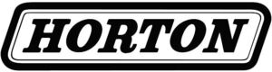

Trade Mark Journal No.2026/005 30 January 2026
WO0000001892096 (7,9,11,42)
Office of origin: United States of America
Date of International Registration:26 November 2024
Date of designation in the UK:
26 November 2024

The mark consists of the word "HORTON" in stylized font, with a parallelogram having curved corners defining a border that surrounds the word.
International priority date claimed: 5 June 2024
(United States of America)
(98585530)
- Class 7
- Fans for machine engines; fans for motors and engines; eFans [electric fans incorporating inverter units] for motors, motor controls, and electric power systems of vehicles and trucks; electric fan units for motors, motor controls, and electric power systems of land vehicles; electric fan units for motors and electronic motor control equipment; electric fan units being used with electric power systems for special vehicles not for transportation purposes; fans for off highway vehicles and trucks, namely electricallypowered fans for cooling motors, on-board electronic controls, and power supplies; eFans [electric fans incorporating inverter units] for cooling motor, motor controls, and electric power systems for special vehicles not for transportation purposes.
- Class 9
- Downloadable software for use in product configuration and selection in the field of engine fans, fan drives, and fan drive clutches.
- Class 11
- eFans [electric fans incorporating inverter units] being components of climate control systems for heating, ventilation and air-conditioning for vehicles and trucks; electric fan units being components of climate control systems for heating, ventilation and air-conditioning for land vehicles.
- Class 42
- Providing online non-downloadable software allowing users to interact with a website using responsive web technology to provide users with access to a platform that assists users in the configuration and selection of engine fans, fan drives, and fan drive clutches.
Horton Holding, Inc.
Representative: Downing IP Limited, 7/8 Eghams Court, Boston Drive, Bourne End Bucks SL8 5YS UNITED KINGDOM